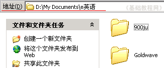

电脑操作基础
二十一、磁盘和文件夹 返回
Windows中有磁盘、文件夹、文件，他们都有一个文件名，文件放在文件夹里，文件夹放在磁盘里；
1、磁盘
1）磁盘名用字母和英文冒号组成，其中A:和B:表示软盘，现在很少用了
打开“我的电脑”，在下面的“可移动存储设备”中，第一个就是软盘；
2）硬盘一般分成几个区，从C:盘开始，C:一般也叫系统盘，里面安装有操作系统；
3）光盘也在“可移动存储设备”中，图标是一个光盘；
4）如果插上U盘或者其它USB设备，在“可移动存储设备”中，还有一个可移动磁盘；
2、文件夹
1）文件夹的名称，一般在新建的时候，要起一个，可以是字母、数字、汉字
打开“我的文档”，里面就有许多文件夹；
2）打开一个文件夹，在地址栏中可以看到一串字符，最后的就是文件夹名，前面的是到这个文件夹所经过的一步一步路径；

3）系统中有一些特殊文件夹，My Documents是“我的文档”，Program Files是程序文件夹，Temp是临时文件夹；
本节学习了在WinXP中的磁盘和文件夹，如果你成功地完成了练习，请继续学习下一课内容；
本教程由86团学校TeliuTe制作|著作权所有
基础教程网：http://teliute.org/
美丽的校园……
转载和引用本站内容，请保留版权信息和本站链接。